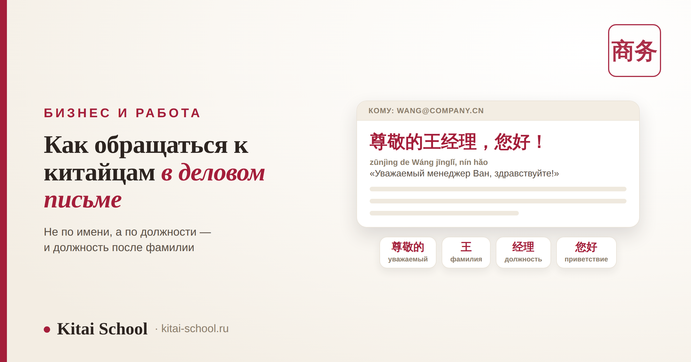
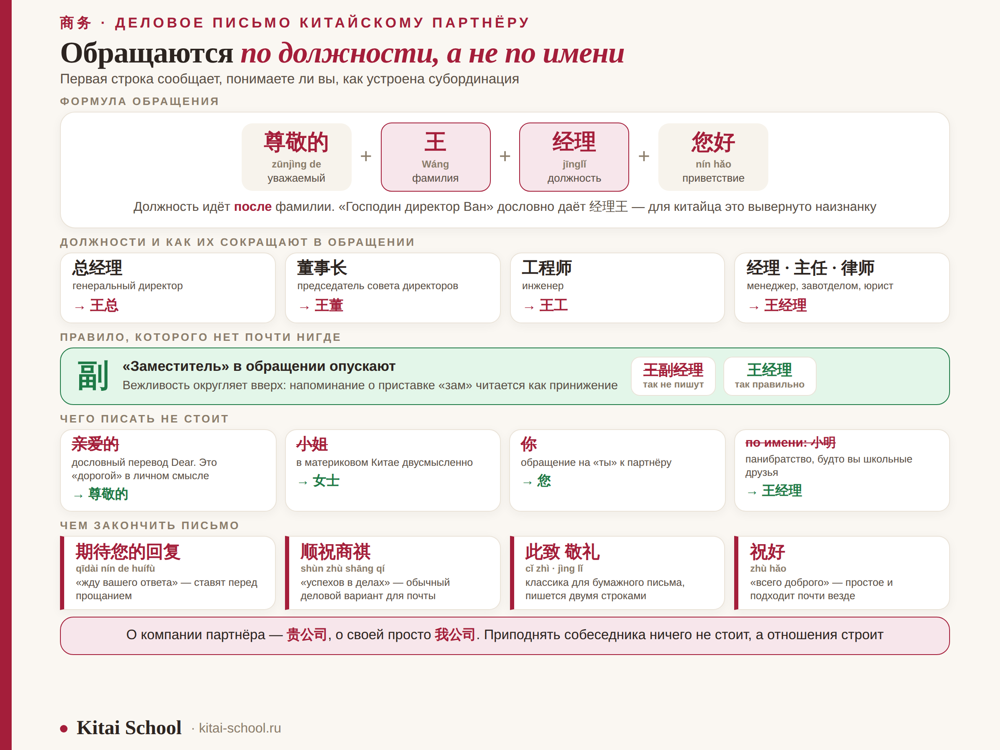

Бизнес и работа
Деловое письмо китайскому партнёру: как правильно обратиться и не нарушить иерархию


Первая строка письма китайскому партнёру решает больше, чем весь остальной текст. Она сообщает, понимаете ли вы, как устроена субординация, — а от этого зависит тон всей дальнейшей переписки. Устроена эта первая строка не так, как у нас: обращаются не по имени, а по должности, должность ставится после фамилии, а приставку «заместитель» из неё убирают. Разберём формулу целиком, посмотрим на готовое письмо и пройдёмся по ошибкам, которые иностранцы делают чаще всего.
Базовая формула: 尊敬的 + фамилия + должность，您好！ — «Уважаемый менеджер Ван, здравствуйте». Имя не используют вообще. Должность идёт после фамилии: 王经理, а не наоборот. Приставку 副 «заместитель» в обращении опускают. Только 您, никогда 你. О компании собеседника — 贵公司, о своей — 我公司. Два обращения, которых лучше избегать: 亲爱的 (это «дорогой» в личном смысле) и 小姐 (двусмысленно). Закрывают письмо формулой 顺祝商祺 или 祝好.
Главное правило: фамилия плюс должность
В русской деловой переписке мы обращаемся по имени-отчеству: «Уважаемый Иван Петрович». В китайской — по должности, и это не формальность, а способ обозначить место человека в структуре. Имя в деловом письме не появляется вообще.
| Элемент | Пример | Зачем |
|---|---|---|
| Фамилия | 王 | всегда первая — в китайском имени фамилия стоит в начале |
| Должность | 经理 | ставится после фамилии: 王经理, «менеджер Ван» |
| Уважительное «уважаемый» | 尊敬的 | ставится перед всей конструкцией, для формального письма |
| Приветствие | 您好 | завершает строку, отделяется запятой |
尊敬的王经理，您好！
zūnjìng de Wáng jīnglǐ, nín hǎo — «Уважаемый менеджер Ван, здравствуйте!»Порядок здесь жёсткий и переставить его нельзя. Русское «господин директор Ван» при дословном переводе даёт 经理王 — для китайского глаза это вывернуто наизнанку, примерно как «Петрович Иван». Определяющее слово в китайском идёт после того, к чему относится: 王老师 «учитель Ван», 李医生 «доктор Ли», 张律师 «юрист Чжан».
Если должность вы не знаете, выручают 先生 (xiānsheng, «господин») и 女士 (nǚshì, «госпожа»): 尊敬的王先生. Но должность всегда лучше — она точнее и уважительнее. Узнать её обычно можно из подписи в предыдущем письме или на сайте компании.
Должности и то, как их сокращают
Часть должностей в обращении принято сокращать до одного знака, и звучит это не фамильярно, а наоборот — как знак того, что вы свой.
| Должность | Пиньинь | Перевод | Обращение |
|---|---|---|---|
| 总经理 | zǒngjīnglǐ | генеральный директор | 王总 |
| 董事长 | dǒngshìzhǎng | председатель совета директоров | 王董 |
| 经理 | jīnglǐ | менеджер, руководитель | 王经理 |
| 主任 | zhǔrèn | заведующий, начальник отдела | 王主任 |
| 工程师 | gōngchéngshī | инженер | 王工 |
| 律师 | lǜshī | юрист | 王律师 |
| 教授 | jiàoshòu | профессор | 王教授 |
| 老师 | lǎoshī | преподаватель | 王老师 |
Форма 总 заслуживает отдельного слова. Формально это сокращение от 总经理, но на практике 王总 говорят широко — любому руководителю заметного уровня. Если человек явно начальник, а точную должность вы не знаете, 王总 почти всегда безопасный выбор.
И правило, которого нет почти нигде: приставку 副 (fù, «заместитель») в обращении опускают. К 副经理 обращаются 王经理, к 副总经理 — 王总. Вежливость в Китае работает на повышение, а напоминание о приставке «зам» читается как принижение. Написать 王副经理 формально верно, а по ощущению — невежливо.
Вежливые местоимения: 贵公司 и 我公司
Второй слой вежливости — в том, как вы называете стороны. В китайской деловой переписке чужое приподнимают, своё держат нейтральным.
| О ком | Как пишут | Буквально |
|---|---|---|
| Компания адресата | 贵公司 | «Ваша драгоценная компания» |
| Сторона адресата | 贵方 | «Ваша сторона» |
| Своя компания | 我公司 | «наша компания», нейтрально |
| Своя сторона | 我方 | «наша сторона» |
| Обращение на «вы» | 您 | почтительное «вы», в письме только оно |
Знак 贵 буквально значит «дорогой, ценный», и в этой роли он работает как встроенный комплимент: 贵公司 приподнимает собеседника, ничего вам не стоя. Себя при этом возвышать не нужно — скромность здесь часть этикета, о ней подробно в статье про китайский этикет общения.

Из личного опыта
Клиент готовился к первому письму важному партнёру и очень старался. Перевёл английское Dear напрямую и написал: 亲爱的王. Получилось «дорогой Ван» — ровно в том смысле, в каком пишут близкому человеку, и вдобавок по фамилии без должности.
Ответ пришёл через два дня, предельно короткий и предельно сухой. Никто ничего не сказал вслух — просто температура переписки упала на несколько градусов, и дальше всё шло тяжелее, чем могло бы.
Мы переписали первую строку на 尊敬的王总，您好！и отправили следующее письмо уже так. Тон ответа изменился в тот же день. С тех пор я показываю ученикам эту пару писем рядом: разница между ними — одна строка, а по эффекту это два разных разговора.
Как выглядит письмо целиком
Китайское деловое письмо короче русского и устроено жёстче: вежливость собрана в начале и в конце, а середина по делу.
| Часть | Что писать | Пример |
|---|---|---|
| Тема | конкретно: компания и суть вопроса | 关于合作方案的确认 |
| Обращение | 尊敬的 + фамилия + должность，您好！ | 尊敬的王总，您好！ |
| Зачин | одна короткая фраза благодарности или связки | 感谢您的回复。 |
| Суть | по делу, без длинных предисловий | — |
| Просьба об ответе | вежливое ожидание | 期待您的回复。 |
| Прощание | деловая формула пожелания | 顺祝商祺！ |
| Подпись | имя, должность, компания, контакты | — |
Про формулы прощания стоит знать две. 顺祝商祺 (shùn zhù shāng qí) — «желаю успехов в делах», обычный деловой вариант для электронной почты. Классическое 此致 敬礼 в бумажном письме пишут двумя строками и оно звучит очень официально: для повседневной переписки избыточно, для официального обращения — уместно. Если сомневаетесь, простое 祝好 «всего доброго» подходит почти везде.
Отдельно про канал. Значительная часть деловой переписки в Китае идёт не по почте, а в WeChat, и там правила мягче: обращение часто сокращается до 王总，您好, а прощальные формулы отпадают. Но первое письмо новому партнёру всё равно пишут по почте и по полной форме — оно задаёт рамку отношений.
Семь ошибок, которые делают чаще всего
| Ошибка | Как звучит для адресата | Как правильно |
|---|---|---|
| Обращение по имени: 小明 | панибратство, будто вы школьные друзья | 王经理 |
| Должность перед фамилией: 经理王 | вывернуто наизнанку, калька с русского | 王经理 |
| Дословный перевод Dear: 亲爱的 | «дорогой» в личном смысле, неуместная близость | 尊敬的…，您好！ |
| Обращение 小姐 к женщине | двусмысленно, в материковом Китае рискованно | 女士 или должность |
| 你 вместо 您 | обращение на «ты» к партнёру | 您 |
| Оставить 副 в обращении | напоминание, что человек только заместитель | 王经理 без 副 |
| Нагромождение вежливости: 尊敬的经理王先生 | три формулы сразу, видно неуверенность | одна формула: 尊敬的王经理 |
Отдельная сложность — определить пол по имени. Китайские имена часто не дают подсказки, и ошибиться с 先生 или 女士 легко. Выход простой: узнайте должность и пишите 王经理 — эта форма пола не касается вообще. Если должности нет, можно написать полное имя и 您好: 王小明，您好！— нейтрально и безопасно.
Почему это работает именно так
За правилами стоит логика, и, поняв её, формулы уже не приходится зубрить. Китайская деловая культура выстроена вокруг иерархии и лица: каждое обращение публично подтверждает статус человека, а письмо часто читают не только адресат, но и коллеги в копии.
Отсюда всё остальное. Должность в обращении — потому что она называет место в структуре. Опущенное 副 — потому что вежливость округляет вверх. 贵公司 — потому что приподнять партнёра ничего не стоит, а отношения строит. И имя не используется не из холодности, а потому что в деловом контексте важна роль, а не личность. Как эта же логика работает во встречах, визитках и застольях, разобрано в статье про бизнес-этикет в Китае.
Частые вопросы (FAQ)
Как правильно обратиться к китайцу в деловом письме?
По схеме «фамилия плюс должность», а не по имени: 王经理 — «менеджер Ван». В формальном письме перед этим ставят 尊敬的 «уважаемый», а следом 您好: 尊敬的王经理，您好！Имя в деловой переписке не используют вообще, даже если вы давно знакомы.
Почему должность стоит после фамилии, а не перед?
Потому что в китайском фамилия идёт первой и определяющее слово ставится после неё, как в 老师 «учитель» или 医生 «доктор». Русское «господин директор Ван» при дословном переводе превращается в 经理王 и звучит для китайца вывернуто наизнанку. Правильный порядок всегда один: сначала фамилия, потом должность.
Нужно ли писать «заместитель», если человек заместитель?
Нет, и это важная тонкость. Знак 副 «заместитель» в обращении опускают: к 副经理 обращаются 王经理. Вежливость здесь работает на повышение, а напоминание о приставке «зам» читается как принижение. То же с 副总经理 — обращаются 王总.
Можно ли обращаться 小姐 к женщине?
В материковом Китае лучше не стоит. У слова 小姐 появился двусмысленный оттенок, и в деловой переписке оно звучит рискованно. Безопасный вариант — 女士 «госпожа»: 尊敬的李女士. Ещё лучше, если известна должность: тогда пишите 李经理 и вопрос снимается.
Как перевести английское Dear в китайском письме?
Никак — прямого аналога нет, и дословный перевод 亲爱的 в деловом письме недопустим: это «дорогой» в личном, тёплом смысле. Функцию Dear выполняет связка 尊敬的 плюс фамилия с должностью плюс 您好. Если сомневаетесь, можно вообще обойтись без 尊敬的: 王经理，您好！звучит нормально.
Чем закончить деловое письмо?
Для электронной почты хватает 顺祝商祺 «желаю успехов в делах» или простого 祝好. Классическая формула 此致 敬礼 уместна в бумажном или очень официальном письме, где её пишут двумя строками. Перед прощанием обычно ставят 期待您的回复 — «жду вашего ответа».
Первую строку письма можно выучить за вечер, но дальше начинается сама переписка — и там нужен язык. На онлайн-курсах Kitai School мы ставим деловой китайский под конкретные задачи: письма, переговоры, документы. Диагностический урок — бесплатный.
Или напишите слово ПИСЬМО нашему менеджеру в Telegram — разберём вашу ситуацию.
Дальше по теме: правила встреч, визиток и подарков — бизнес-этикет в Китае; иерархия и «лицо» в живом общении — китайский этикет общения; обучение команды — корпоративный китайский; работа в китайской компании — работа в Китае для иностранца.
Источники
- Википедия: Китайское имя — порядок фамилии и имени, обращение по фамилии.
- Пособия по деловому китайскому (商务汉语) — формулы обращения и завершения письма.
- Практика Kitai School — разбор переписки учеников с китайскими партнёрами.
Пусть переписка идёт гладко! 顺祝商祺！